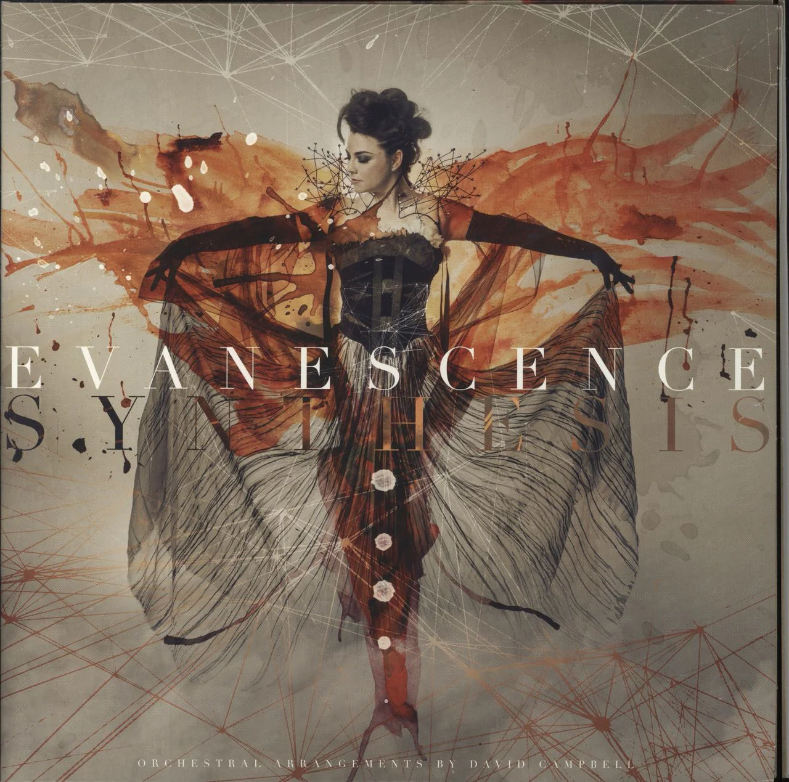

Discographie d'Evanescence

Fallen (2003)
L'album qui a propulsé Evanescence sur la scène mondiale avec des hits comme "Bring Me to Life" et "My Immortal".

The Open Door (2006)
Un album acclamé par la critique qui explore des thèmes plus sombres et matures.

Synthesis (2017)
Un album unique combinant des éléments orchestraux avec des réinterprétations de leurs chansons classiques.

The Bitter Truth (2021)
Le dernier opus du groupe, marquant un retour au rock pur et dur après une longue attente.

Anywhere but Home (2004)
Un album live capturant l'énergie brute des performances scéniques d'Evanescence.